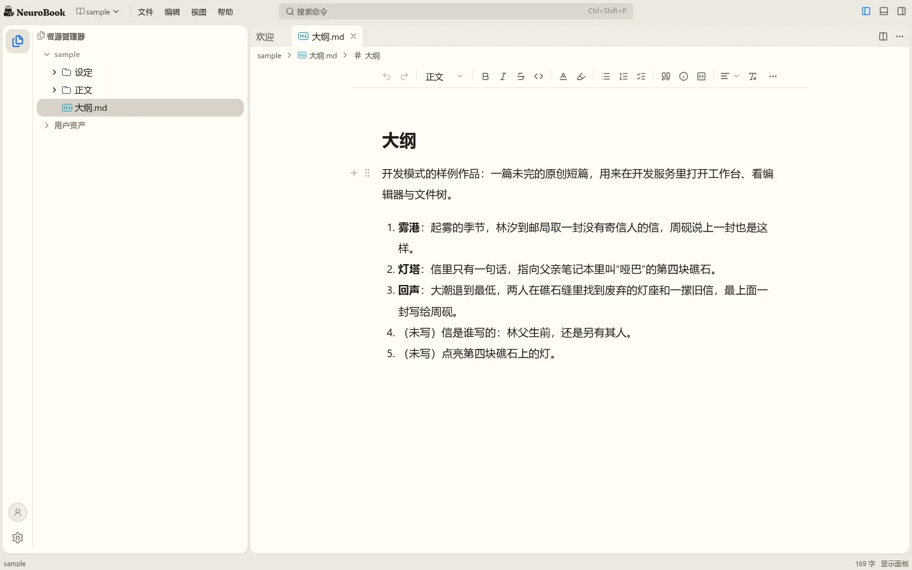
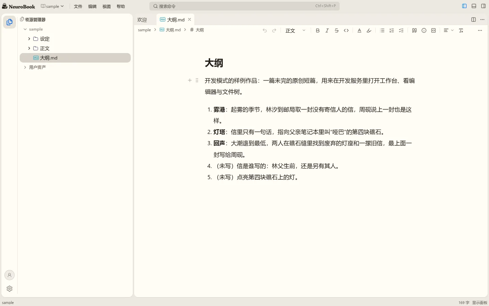
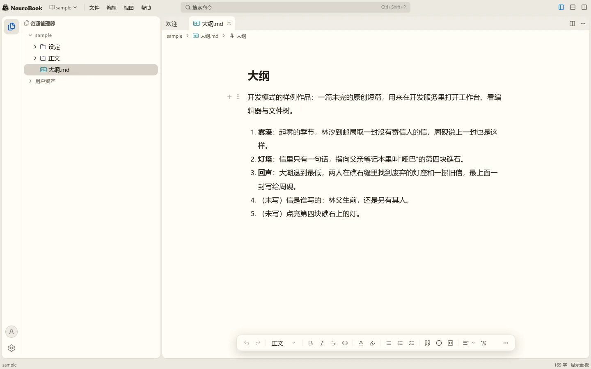
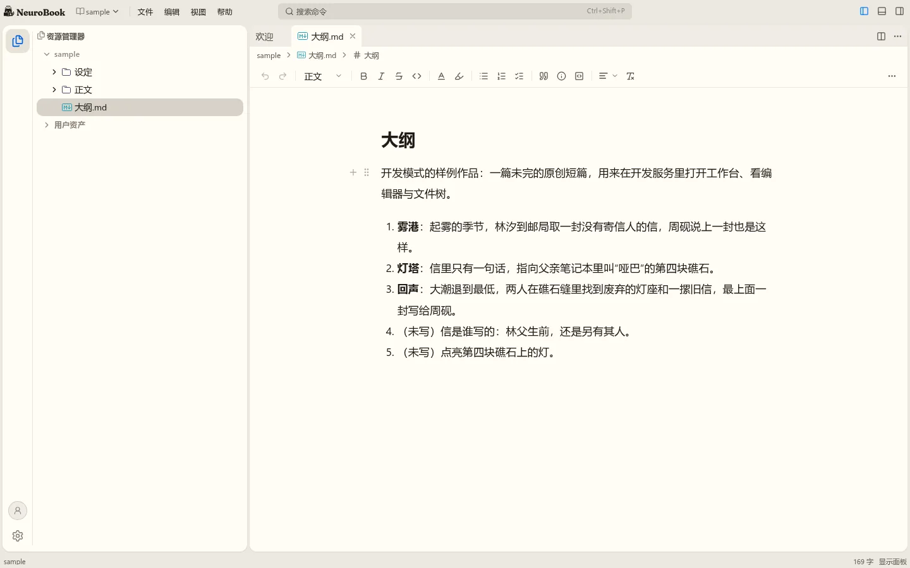
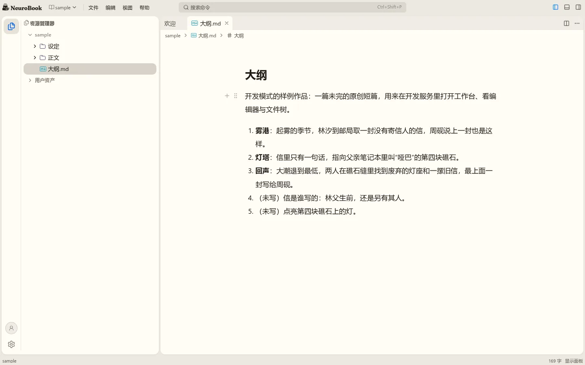

工具栏放在哪里
w00025 t18。图都是真实页面加注入样式，没有改产品代码。亮色、窗口 1440×900。
为什么现在突兀：正文上面已经有菜单栏、标签栏、面包屑三条通栏，工具栏是第四条；它是唯一一条居中、720px 宽的，分隔线两端悬空，也不和上面任何东西对齐；18 个图标权重相同，又正好压在正文正上方，写作时一直在视线里。
工具栏放哪里 待定
现在的样子

并入面包屑那一行
路径在左，工具在右，少一条横线，正文往上提。拆分后宽度不够时按钮照样收进“⋯”。

底部浮条
顶部回到干净的状态；代价是长期盖住正文最下面一段，要滚动才能写到那里时会挡。

留在原位，改成通栏
只解决悬空的线和对齐，第四条还在。

缺省不显示
靠选区菜单、斜杠菜单、块菜单；“视图”菜单还能打开。最安静，但颜色、对齐这些要先选中或从块菜单找，新手更难发现。这也改了你之前定的“默认打开”。

推荐并入面包屑那一行。按钮还常驻，但不再多占一层，也不再压在正文正上方。